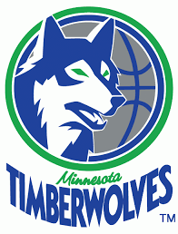

The T-wolves picked up Kevin Garnett after trading him for Thaddeus Young, even so, it looks like hte T-Wolves are bound for one more top 5 pick in this year's draft
Only a Freshman, Jahlil is unquestionably the top pick on more than half the NBA GM's draft boards. Already 6'10'', he's 1 of 3 players with a chance to be NCAA Player of the Year. It may not matter what Jahlil does in the tournament. He'll most likely be the #1 pick in this year's draft. Jahlil's highlights
This will not be a popular choice. Most pundits have one of two as the #2 pick. However, the wolves need defense and once they lose Kevin Martin, they'll need scoring. As a 19 year old, Turner is already one of the best shooting big men in the country. He is 6'11'' and growing. That long wing span, together with his agility will make him an above average NBA defender. Call this the visual test, but I like Turner to be the Wolves pick at #2. Here's the top NBA draft site's guide
If a real NBA GM passed on Towns at #1 or #2, he'll have a lot of explainng to do if this kid ends up as the best player in the draft. Scouts love him and for good reason. Check out his vertical leap numbers However, I still believe he's a bit raw and doesn't possess good offenssive skills, although they should develop. #3 would work for me, but I don't have a job to lose
| 2014 | 9.3 ppg |
| 2013 | 6.8 ppg |
| 2012 | 8.3 ppg |
Cauley-Stein has improved his points per game by over 2 points from last year to this year and by 1 point from his freshman year. He's a true defensive specialist and at 7 foot tall, he'll be a starter in the league for a long time. He has potential to develop into an Ibaka type player, but he'll need to work a lot on his jump shot. To me, he's more like Chris "birdman" Anderson in his prime. He's a safe pick at #4.
Frank is the only Senior to make this list. He's gone from an obscure player his Freshman and Sophomore years, to bursting on the National scene as Wisconsin made it to the Final Four in 2014. Frank has only continued to improve his game and is the front runner for National Player of the Year. He won't be drafted nearly this high, but I'm a homer.